What is the Stop Automatic Windows Updates Program?
Are You Suffering From Automatic Windows Updates That Consume Internet And Bother You?
This program is the solution!
Stop Windows Updates Program is an easy-to-use tool that allows you to control stopping Windows operating system updates. It is a program that checks the status type of the Windows Automatic Updates service to see if it is running (Running), stopped (Stopped), or pending (Start Pending - Stop Pending), and checks the startup type to see if it is automatic (Automatic), manual (Manual), or disabled (Disabled) to organize them according to the user's desire by choosing what suits them in the program interface. The program allows you to stop automatic updates for the Windows operating system in the services app from running to stopped when the user wants to stop the updates service while browsing the internet or for any other reason, and restart it when they want. It can also disable the startup type to disabled from the settings screen and not from the program interface, and it cannot disable it unless after reading the warnings, risks, and tips mentioned and taking full responsibility for this procedure. Knowing that it is not possible to disable the startup type to disabled permanently in modern versions of Windows, as Windows automatically restarts the startup type to manual after a period of time.
Why Do You Need This Program?
🎯 Saving Internet Package Consumption
Automatic updates consume a large amount of data in the background without the user's knowledge, which affects limited internet packages.
⚙️ Control Over Updates
Many users do not need all automatic updates and want to update the system manually only when needed, to maintain system stability and save resources.
💡 Ease of Use
The need for a simple and easy program with a clear user interface, allowing control over Windows updates without the need for complex steps. As a user: I believe that I do not need all these updates because I perform a comprehensive update for everything I need from drivers and the like when installing the Windows system and installing the antivirus, I only update Windows Defender from time to time and this suits me very well and I do not need more. There are similar programs, but I did not find an easy and simple program that does what I want, so I made a copy with a very simple interface that fulfills the requirement, but a friend suggested that I pay a little attention to the program's appearance and development. This program has effectively met these needs for me and provided me with a comfortable and easy user experience to control Windows updates manually.
How to Install The Program?
(I will write how to install the program after I finish all the details at a later time)
(I will write how to install the program after I finish all the details at a later time)
How to Open?
Running The Program
To run the Stop Windows Updates Program, you can follow these steps:
Search For The Program: Look for the program icon in the "Start" menu or on the desktop. You can also use the search box in the "Start" menu to find the program quickly
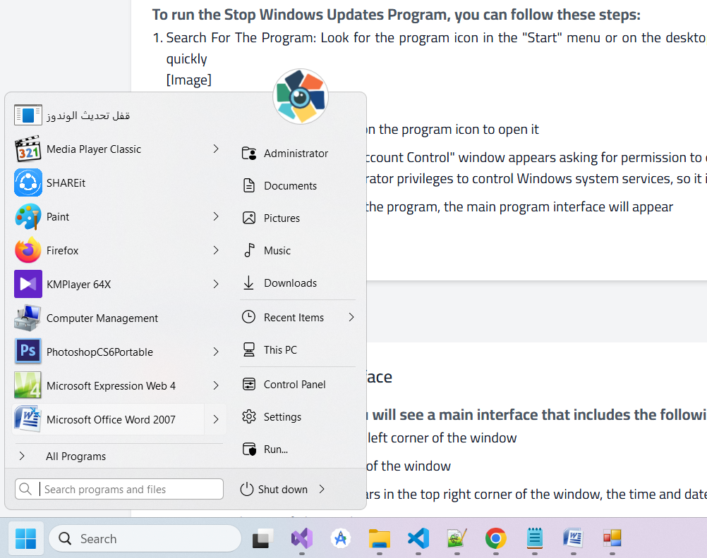Searching in the "Start" menu
Open The Program: Double-click on the program icon to open it
Approve Permissions: If a "User Account Control" window appears asking for permission to open the program, click "Yes" to continue. Important note: The Stop Windows Updates Program needs administrator privileges to control Windows system services, so it is necessary to approve these permissions for the program to work correctly
Program Interface: After opening the program, the main program interface will appear
Program Interface
The Main Program Interface
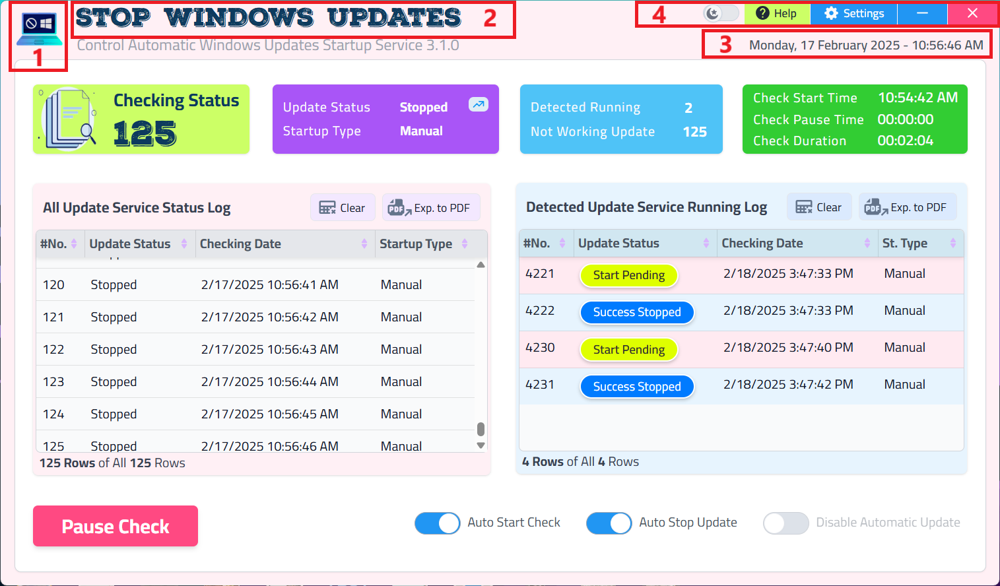Program Interface
When you run the program, you will see a main interface that includes the following elements:
Program Logo: Appears in the top left corner of the window
Program Title: Appears at the top of the window
Time and Date Information: Appears in the top right corner of the window, the time and date is the same as the system time
Buttons at The Top of The Window:
Window Close Button (
): To close the program
Minimize Button (
): To minimize the program window and place it in the taskbar
Settings Button (
): To open the program settings window and access program customization options
Help Button (
): When you click on the "Help" button, a drop-down menu will open containing the following options:
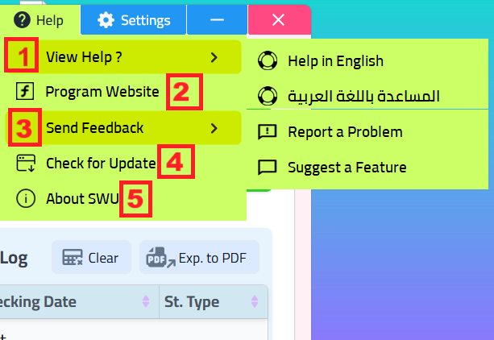
View Help ?: A window that provides users with a comprehensive guide in English or Arabic on how to use the program and its various features. You can access detailed information about program functions, how to deal with the user interface, available settings, and answers to frequently asked questions that the user may encounter
Program Website: A page will be opened in your internet browser to provide information about the Program Website and those in charge of it. Here you can find the developer's contact information, or a profile of the developer and their experience, or links to other projects of the developer if available
Send Feedback: A new window will be opened aimed at facilitating the process of users communicating with the program developer directly. Through this window, you can report errors and problems you encounter in the program, and send your feedback and suggestions to improve the program and develop it in the future. User feedback and suggestions help the developer understand user needs and improve the quality of the program
Check for Update: A new window will be opened that allows the user to check for updates or new versions of the program available online. If there is a new update, you can view information about the update and download and install it to get the latest features, improvements and bug fixes
About Program: A window will be opened that provides basic and important information about the program itself, such as the Program Name, the current Version Number, Copyright Information, and any other identification information that the developer deems necessary to introduce users to the program
Mode switch button (
): To switch the mode between Dark Mode and Light Mode. It changes the colors of texts and other elements inside the program based on the selected mode state to provide a comfortable experience for the eye
Automatic Update Services Check Status Information
Automatic update services check status information is displayed in the middle part of the program interface, and includes the following elements
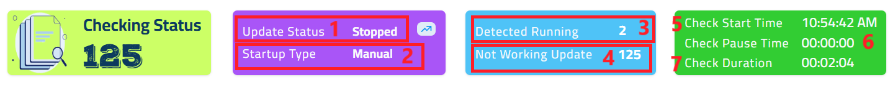
Element
Description
1- Update Status
Displays the current status of the Windows Automatic Updates service, and is one of the following statuses: Stopped or Running or Pending (Start Pending - Puase Pending)
2- Startup Type
Displays the startup type for the Windows Updates service, and is one of the following types: Manual or Automatic or Disabled
3- Detected Running
Displays the number of times the automatic update was detected as running while the program was running
4- Not Working Update
Displays the number of times the automatic update did not work while the program was running
5- Check Start Time
Displays the start time of the program to check the Windows Automatic Updates service, and changes to Last Resume Time when the check is paused temporarily and resumed again
6- Check Pause Time
Displays the time the program was paused temporarily to check the automatic updates service
7- Check Duration
Displays the duration of the program running to check the automatic updates service since the program started. The program accumulates the duration cumulatively throughout the running period
Automatic Update Services Check Logs
Automatic update services check logs are displayed in the lower part of the program interface, and are divided into two main sections:
All Update Service Status Log: Displays a detailed log of all automatic updates service check statuses. This log includes every time the service status is checked, whether it is running, stopped, or pending, with the time and date recorded for each status. You can use this log to track the service check history and ensure that the program is working as expected
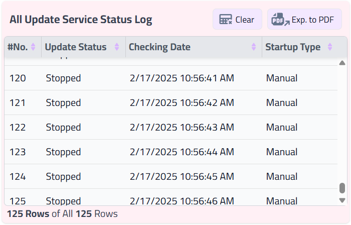Example of All Update Service Status Log
Detected Update Service Running Log: Displays a log specific to automatic updates that were detected as running or attempting to run and successfully stopped later by the program. You can use this log to review cases where the program automatically stopped automatic updates
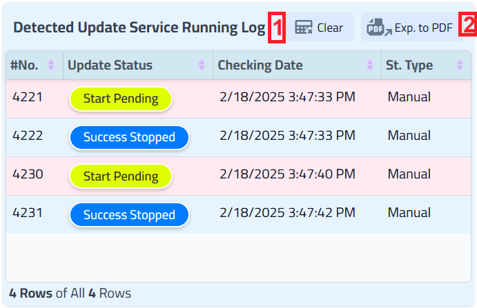Example of Detected Update Service Running Log
Log Control Buttons
Below each log of automatic update services check logs, there are buttons to control the log:
Clear (Delete): To clear the content of the selected log (all statuses log or detected running updates log). When you click on this button, all data in the log will be permanently deleted
Exp. to PDF: To export the content of the selected log to a PDF file (Portable Document Format). You can use this feature to save a copy of the log on your device or share it with others
Program Functions Control Buttons
In the bottom part of the program interface, there are the main control buttons for program functions:
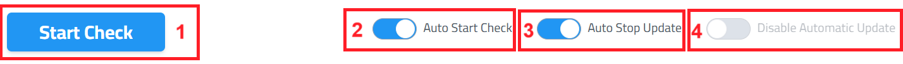
Start Check / Pause Check: A button to start or pause checking the status of update services
When you click on the Start Check button for the first time, the program is run and starts checking the status of automatic update services periodically according to the settings. After clicking it, the button name changes to Pause Check and its color changes to indicate that the check is running
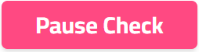Pause Check button
When you click on the Pause Check button, the program is temporarily stopped from checking the status of automatic update services. You can click on the Start Check button again to resume the check
Auto Start Check: A button to enable or disable automatic checking of the status of automatic update services when the program is opened
When this button is activated (it is checked or lit), the program will automatically start checking the status of automatic update services as soon as it is run
When this button is deactivated (unchecked or not lit), the program will not start checking automatically when run, and requires clicking on the Start Check button to start the check
Auto Stop Update: A button to enable or disable automatic stopping of the automatic updates service when it is detected as running
When this button is activated (it is checked or lit), the program will automatically stop the automatic updates service (change status to stopped) as soon as it is detected as running. A notification will also appear telling you about the success or failure of stopping the update service, if alerts are enabled in the settings
When this button is deactivated (unchecked or not lit), the program will not stop automatic updates automatically, and will only display the service status in the "Update Status" section
Disable Automatic Update: This button is disabled
Important Note
To Activate Disable Automatic Update: The option to permanently disable updates is activated only through the Settings window and not from the main program interface, in order to protect the user from unintentionally disabling updates and to emphasize the importance of reading warnings and risks before permanently disabling updates
Stopping Automatic Update Services
To temporarily stop running the automatic updates service, do the following:
Open The Program: Run the Windows Updates Stop Program
Start Checking: Click on the "Start Check" button to start checking the status of Windows updates services if the check is stopped. You will see the update service status in the "Update Status" section
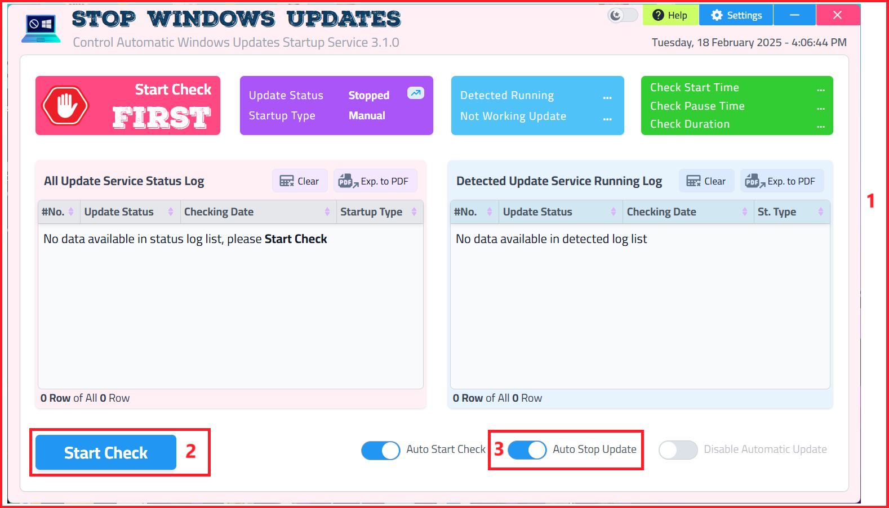Program interface with indication of the Start Check button and Auto Stop Update button
Activate Automatic Stop: Click on the "Auto Stop Update" button and check it if it is not already checked
Automatic Stop When Running: When the "Auto Stop Update" button is activated, the program will stop updates automatically (change status to stopped) as soon as they are detected as running. A notification will also appear telling you about the success or failure of stopping the update service, if alerts are enabled in the program settings
Disabling Automatic Update Services Permanently
Important Warning
Disabling Windows Updates permanently can pose serious security risks to your system.
To permanently disable running the automatic updates service, follow these steps:
Open The Settings Window: Click on the "
" button at the top of the program interface on the right side, the "Edit Settings" options window will open
Go to General Options: Choose the "General Options" tab
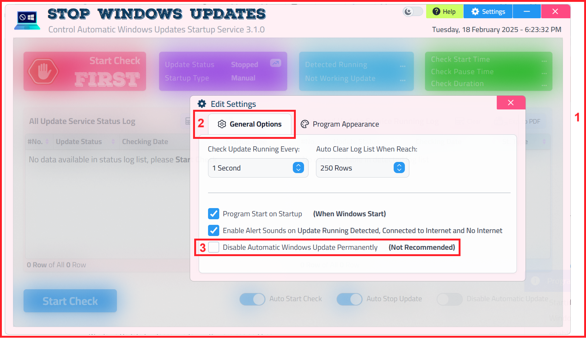Settings window and General Options tab
Permanent Disable Updates: Go to the bottom of the page and you will find the check box button "Disable Automatic Windows Update Permanently (Not Recommended)" and select it
When click on it, a new window "Windows Update Guidance" will open for you
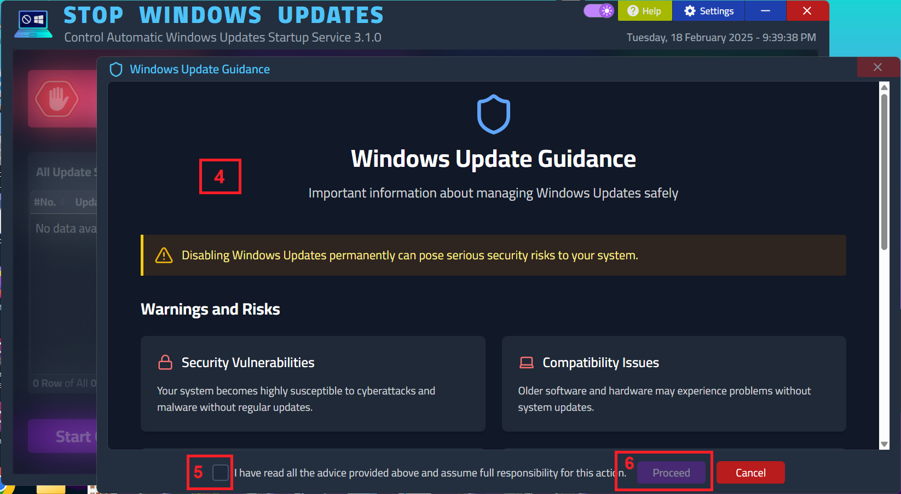Windows Update Guidance window with warnings and tips
Read Warnings And Guidance: The "Windows Update Guidance" window contains important information, warnings, risks and tips about not disabling Windows updates permanently (disabled). In this window, there are two buttons:
Cancel: Closes the "Windows Update Guidance" window and displays the "Edit Settings" options window again, without disabling permanent updates
Proceed: Initially inactive button. To activate the Proceed button, it is recommended that you read the content of the window, including warnings, risks and tips about not disabling Windows updates permanently disabled
Confirm Reading And Proceed: Click on the check box button "☐ I have read all the warnings and understood the risks of disabling automatic Windows updates permanently". When this box is checked, the "Proceed" button will be activated
Disable Updates Permanently: Click on the "Proceed" button after it is activated. The Windows automatic updates services will be permanently disabled (change startup type to Disabled)
Program Options
Edit Settings Window: The "Edit Settings" options window can be accessed by clicking on the (
) button in the main program interface
This Window Consists of Two Main Tabs: "General Options" and "Program Appearance":
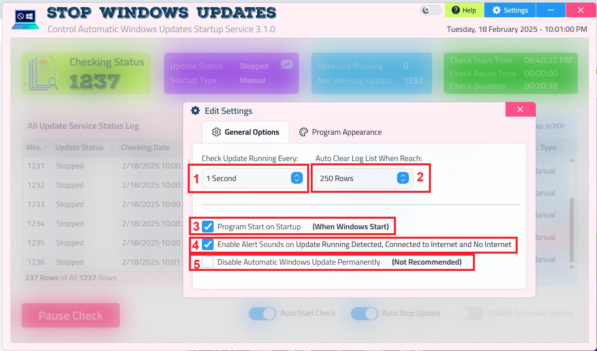Edit Settings - General Options
"General Options" Tab: This tab controls the basic options of the program, and includes:
Check Update Running Every: Allows you to specify the time period during which the status of update services is checked automatically. You can choose from several options, such as 1 second, 5 seconds, 10 seconds, etc. When do you use this option? If you want to check the update status frequently, you can choose a shorter time period. Who is this option useful for? For users who want to monitor the update status accurately and in real time
Auto Clear Log List When Reach: Allows you to specify the number of rows that the log list should reach to be automatically cleared. You can choose from several options, such as 250 rows, 500 rows, 1000 rows, etc. When do you use this option? If you use the program for a long time and the event log becomes very large, you can activate this option to clear the log automatically and maintain program performance. Who is this option useful for? For users who use the program continuously and want to manage the size of the event log
Program Start on Startup (When Windows Start): Allows you to specify whether the program will be run automatically when the Windows operating system starts. When do you use this option? If you want the program to start checking and monitoring Windows updates automatically as soon as you turn on your computer, you can activate this option. Who is this option useful for? For users who want continuous monitoring of Windows updates without having to run the program manually each time
Enable Alert Sounds on Update Running Detected, Connected to Internet and No Internet: Allows you to specify whether alert sounds will be played in different situations: when update running is detected, when connected to the internet, and when not connected to the internet. When do you use these options? If you want to receive sound alerts when certain events related to Windows updates and internet connection status occur, you can activate these options. Who are these options useful for? For users who want to get immediate alerts when update running is detected or the internet connection status changes
Disable Automatic Windows Update Permanently (Not Recommended): Allows you to disable Windows automatic updates permanently. Warning: This option is not recommended for ordinary users because it may expose your system to danger. It is only recommended for advanced users who understand the potential risks and take alternative security precautions. Who is this option useful for? For advanced users only who have a full understanding of the potential security risks of permanently disabling updates and take alternative security precautions
"Program Appearance" Tab: This tab controls the appearance of the program and the user interface, and includes:
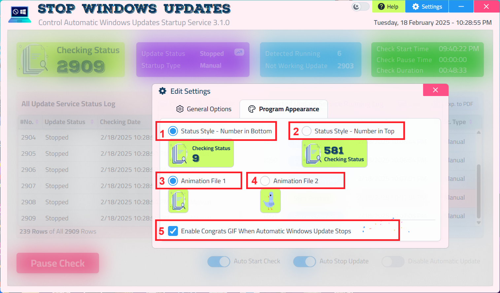Edit Settings - Program Appearance
Status Style - Number in Bottom: Allows you to specify whether the update status number will be displayed in the lower part of the status icon in the main program interface
Status Style - Number in Top: Allows you to specify whether the update status number will be displayed in the upper part of the status icon in the main program interface
Animation File 1: Allows you to specify an animated image file (GIF) to be displayed during the check in the main program interface to the left of "Checking Status"
Animation File 2: Allows you to specify a second animated image file (GIF) to be displayed during the check in the main program interface to the left of "Checking Status"
Enable Congrats GIF When Automatic Windows Update Stops: Allows you to specify whether a congratulatory GIF image will be displayed when the automatic Windows update is successfully stopped by the program. You can activate this option to add a fun touch when stopping updates
Save Changes
The program will automatically saves changes when you modify the options in the selected tab, activate or deactivate check boxes, choose values from drop-down menus, specify image or animation files, and other available options according to your preferences and will inform you with notification message
Important Notes
Run as Administrator: Make sure that you have run the program as administrator to be able to control Windows updates services correctly. To run the program as administrator, right-click on the program icon and choose "Run as administrator".
Technical Support: If you encounter any problems while using the program or have any questions or inquiries, do not hesitate to refer to the help page (by clicking on the "Help (?)" button in the main program interface) or contact technical support for assistance.